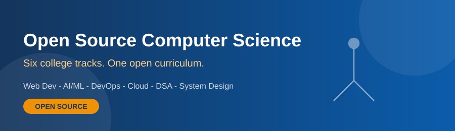

Web Development
Build real websites and full stack apps with HTML, CSS, JavaScript, React and Node.
Open Source Computer Science Curriculum — College Track

Pupil is an open source learning platform for college computer science. We run six tracks — Web Development, AI/ML, DevOps, Cloud Computing, DSA and System Design — and the whole curriculum is open: readable, forkable and improvable by anyone.
We do not write yet another closed course. We curate the best openly published material from W3Schools, GeeksforGeeks, Stack Overflow, takeUforward and others, arrange it into a semester plan, and teach it in the lab.
Pick any track. There is no admission test and no fixed batch — start where you are.
Build real websites and full stack apps with HTML, CSS, JavaScript, React and Node.

Learn Python for data, the maths behind models, and train real ML models with scikit-learn.

Linux, Git, Docker, Kubernetes and CI/CD pipelines that ship code automatically.

Virtualisation, AWS, Azure and GCP core services, serverless and cloud security.

The complete Striver A2Z path: arrays to graphs to dynamic programming, with 450+ problems.

HLD and LLD: scaling, caching, sharding, queues, microservices and design patterns.
| Track | Level | Duration | Modules | Main Source |
|---|---|---|---|---|
| Web Development | Beginner to Intermediate | 13 weeks | 6 | W3Schools |
| AI / Machine Learning | Intermediate | 14 weeks | 6 | GeeksforGeeks |
| DevOps | Intermediate | 12 weeks | 6 | roadmap.sh |
| Cloud Computing | Beginner to Intermediate | 12 weeks | 6 | GeeksforGeeks |
| Data Structures & Algorithms | Core — all branches | 16 weeks | 6 | takeUforward |
| System Design | Advanced — final year | 10 weeks | 6 | System Design Primer |
| Total across all tracks | 36 modules | All openly published | ||
I finished the Striver A2Z sheet through the DSA track without ever joining a coaching class. The lab sessions told me what to read next — the material was already out there in the open.
— Final year student, Computer Science
The DevOps track made me deploy my own project on a Kubernetes cluster in the college lab. That one project got me shortlisted in three interviews.
— Third year student, Information Technology
Students who joined this week's open lab session: 0